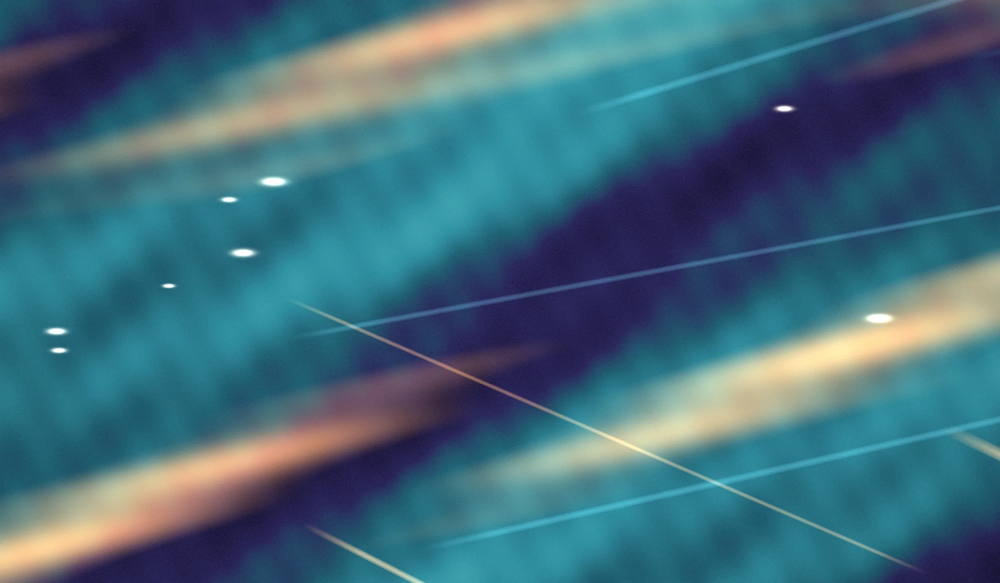
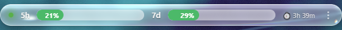

An always-on-top glass bar showing your Claude usage limits and what Claude Code is currently doing.
View source on GitHub Download
Figures above are illustrative. The real bar reads the claude.ai usage API every 30 seconds.
5-hour and 7-day windows read straight from the claude.ai usage API, polled every 30 seconds. Green below 50%, yellow to 80%, orange to 90%, red above.
A dot showing what Claude Code is doing right now: blue while a session is working, blinking yellow when it needs input, green when a turn finishes, grey when nothing is running. Across every live session at once — the most urgent state wins.
The bar captures the desktop behind it and runs it through a WebGL shader: a bevelled rim, chromatic aberration, a frosted interior, and bloom. The bar at the top of this page is that same shader, running on a still image instead of a live capture.
backdrop-filter only samples the page it is on. In a transparent Electron window there is nothing behind the element to sample, so the frosted-glass look that works on a normal web page produces nothing at all here.
So the bar captures the screen itself, through desktopCapturer, and refracts that feed in WebGL. The window excludes itself from the capture — otherwise it samples its own output and the glass fills with an infinite tunnel of itself.
The status dot is driven by a Claude Code hook. But Notification fires for two different things: a real permission prompt, and the idle "Claude is waiting for your input" nudge. Treating them the same meant every completed task eventually flipped from green to yellow while sitting idle.
The nudge is now suppressed when nothing is executing — if Stop has already run, there is no work to interrupt, so the notification cannot mean what it appears to mean.
Checking whether a session is still alive by looking for its id with pgrep -af works for interactive sessions and fails silently for background jobs: the session id exists only inside the hook payload and never appears in the process command line. Those sessions read as dead the moment they start.
Liveness falls back to file recency instead — a status file touched within the last 15 minutes counts as live.
The whole bar is -webkit-app-region: drag so you can move it from anywhere. Chromium delivers no mouse events at all over a drag region: mousemove never fires, and :hover never matches. The expand-on-hover simply stopped working the moment the bar became draggable.
Hover is hit-tested in script instead. The pointer is polled from the OS once a frame and compared against the bar's own rectangle, measured every frame — the expanded rectangle contains the collapsed one, so the state settles instead of oscillating between the two.
The same drag region made the app's menu unreachable. Windows hit-tests a drag surface as the window caption, so a right-click was answered by Windows' own Move/Size/Close menu before the app ever saw it. Hooking the native messages does not help: hookWindowMessage only observes them and cannot pre-empt DefWindowProc, which was verified on both button-down and button-up.
So the menu moved behind a small ⋮ button that opts out of the drag region with no-drag — a deliberate hole in the drag surface that does receive clicks.
The usage API returns more than one entry in the weekly group: weekly_all, the account-wide figure the web app shows, and a narrower weekly_scoped that sits at zero. The parser assigned on every match as it walked the array, so whichever came last won — and the zero landed on top of the real number.
It now picks weekly_all explicitly, so array order no longer decides what you see.
Runs on Windows, macOS and Linux, packaged with electron-builder.
Dragging the bar to another monitor re-acquires that display's capture and its scale factor — a capture stream only ever contains the one display it was opened for, so without this the bar keeps sampling the old screen with coordinates that fall outside the frame.
On Windows the overlay always runs natively. When Claude Code runs inside WSL — the usual setup — it reads the status files across that boundary over \\wsl.localhost\, probing every installed distribution; when Claude Code runs natively too, it finds them in %TEMP%. Both are probed, so a machine with several distributions and a native install at once needs no configuration.
Download a build for Windows, macOS or Linux, or run it from source:
git clone https://github.com/NoamElyasim/Claude-usage-limits-bar
cd Claude-usage-limits-bar
npm install
npm startSign in once through the app's own window — an email code, since Google sign-in refuses an embedded browser. The session lives in the OS user-data dir and survives restarts. Nothing else to configure: the org id is discovered on first run and the status directory is probed.